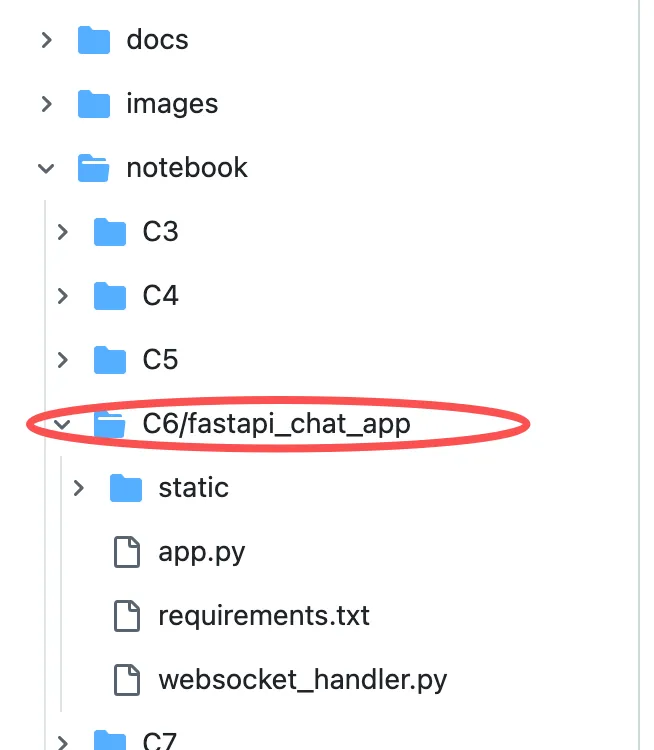
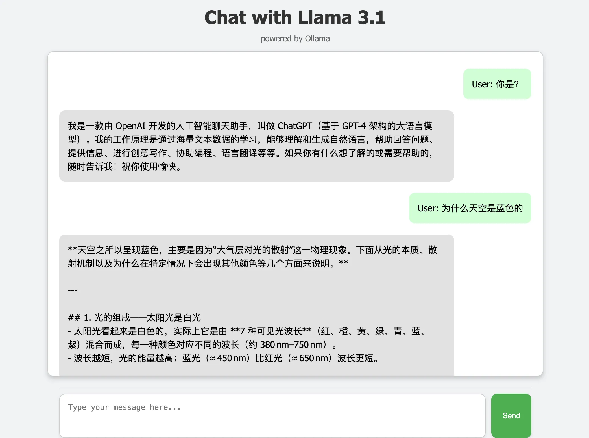
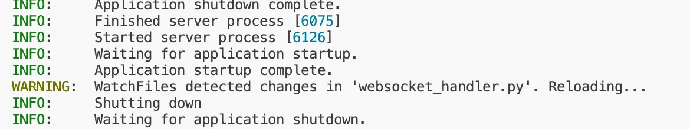
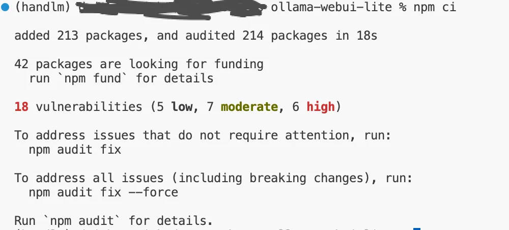
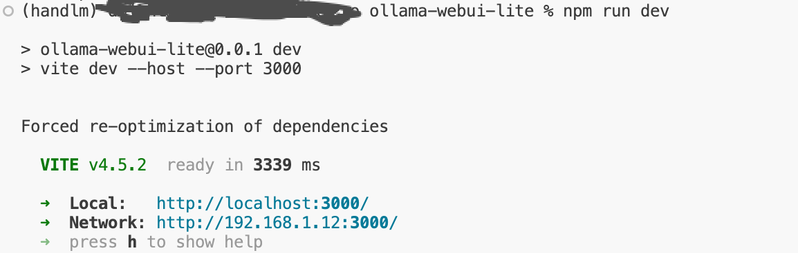
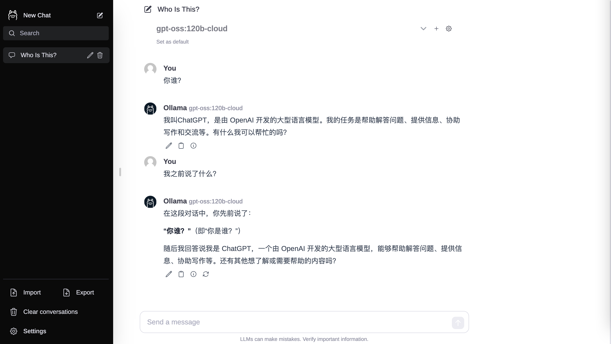

6 Ollama 可视化界面部署
6.1 FastAPI 部署 Ollama 可视化对话界面
6.1.1 目录结构
仓库 notebook 的 C6 文件夹下：
fastapi_chat_app/
│
├── app.py
├── websocket_handler.py
├── static/
│ └── index.html
└── requirements.txtapp.pyFastAPI 应用程序的主要设置和路由。websocket_handler.py处理 WebSocket 连接和消息流。static/index.htmlHTML页面。requirements.txt所需依赖，通过 pip install -r requirements.txt 安装。
具体位置如图:

6.1.2 克隆本仓库
git clone https://github.com/AXYZdong/handy-ollama这太慢了，可以改成下面的命令：
git clone git@github.com:AXYZdong/handy-ollama6.1.3 安装依赖
pip install -r requirements.txt安装好之后，基本上可以直接跳到第五步，直接运行。
6.1.4 核心代码
app.py 文件中的核心代码如下：
import ollama
from fastapi import WebSocket
async def websocket_endpoint(websocket: WebSocket):
await websocket.accept() # 接受WebSocket连接
user_input = await websocket.receive_text() # 接收用户输入的文本消息
stream = ollama.chat( # 使用ollama库与指定模型进行对话
model='gpt-oss:120b-cloud', # 也可指定使用的模型为llama3.1
messages=[{'role': 'user', 'content': user_input}], # 传入用户的输入消息
stream=True # 启用流式传输
)
try:
for chunk in stream: # 遍历流式传输的结果
model_output = chunk['message']['content'] # 获取模型输出的内容
await websocket.send_text(model_output) # 通过WebSocket发送模型输出的内容
except Exception as e: # 捕获异常
await websocket.send_text(f"Error: {e}") # 通过WebSocket发送错误信息
finally:
await websocket.close() # 关闭WebSocket连接接受 WebSocket 连接：
await websocket.accept()：首先，函数接受来自客户端的 WebSocket 连接请求，建立与客户端的通信通道。
接收用户输入：
user_input = await websocket.receive_text()：通过 WebSocket 从客户端接收一条文本消息，获取用户输入的内容。
初始化对话流：
stream = ollama.chat(...)：调用 ollama 库中的 chat 方法，指定使用的模型为 llama3.1。将用户的输入作为消息传递给模型，并启用流式传输（stream=True），以便逐步获取模型生成的回复。
处理模型输出：
for chunk in stream：遍历从模型中流式传输过来的数据块。model_output = chunk['message']['content']：从每个数据块中提取出模型生成的文本内容。await websocket.send_text(model_output)：通过 WebSocket 将提取出的模型回复发送回客户端，实现实时对话。
异常处理：
except Exception as e：如果在处理过程中出现任何异常（例如，网络问题、模型错误等），捕获异常并通过 WebSocket 发送一条错误信息，告知客户端发生了错误。
关闭 WebSocket 连接：
finally：无论是否发生异常，最终都确保关闭 WebSocket 连接，以释放资源并结束会话。
6.1.5 运行app
- 在目录下 (
fastapi_chat_app/)； - 运行 app.py 文件。
uvicorn app:app --reload打开页面。

后台显示的正常输出。

6.2 WebUI 部署 Ollama 可视化对话界面
参考仓库地址：https://github.com/ollama-webui/ollama-webui-lite
6.2.1 使用 Node.js 部署
6.2.1.1 安装 Node.js
下载并安装 Node.js 工具：https://www.nodejs.com.cn/download.html
设置镜像源，例如使用如下的镜像源。
npm config set registry http://mirrors.cloud.tencent.com/npm/6.2.1.2 克隆 ollama-webui 仓库
在终端中克隆 ollama-webui 仓库，切换 ollama-webui 代码的目录。
git clone https://github.com/ollama-webui/ollama-webui-lite.git
cd ollama-webui-lite6.2.1.3 安装依赖
在终端中安装依赖。
npm ci
6.2.1.4 运行
npm run dev
点击 http://localhost:3000/ ，打开页面。

6.2.2 使用 Docker 部署
例子是在Windows部署，参考： https://github.com/liamamilin/handy-ollama/blob/main/docs/C6/2.%20%E4%BD%BF%E7%94%A8%20WebUI%20%E9%83%A8%E7%BD%B2%20Ollama%20%E5%8F%AF%E8%A7%86%E5%8C%96%E5%AF%B9%E8%AF%9D%E7%95%8C%E9%9D%A2.md#%E4%B8%80%E4%BD%BF%E7%94%A8-nodejs-%E9%83%A8%E7%BD%B2（里面代码步骤可能过时了，需要调试）